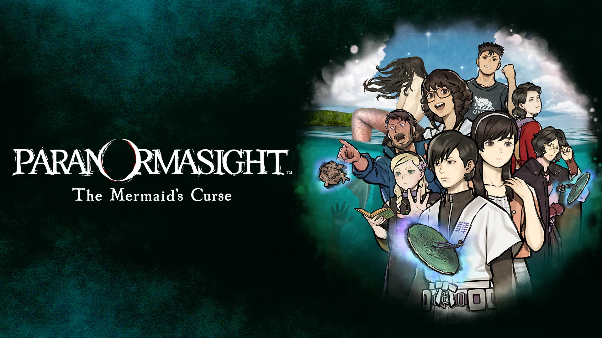
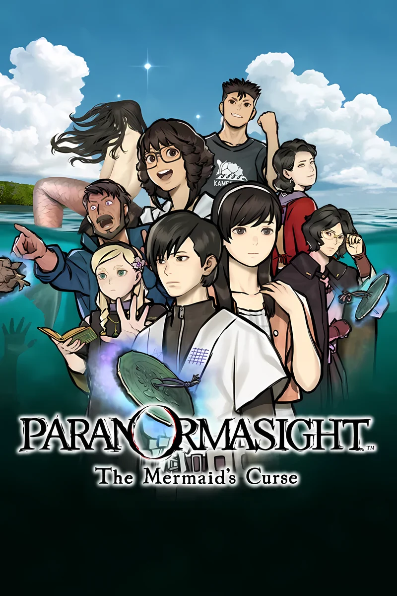
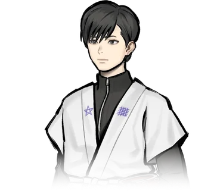
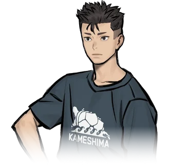
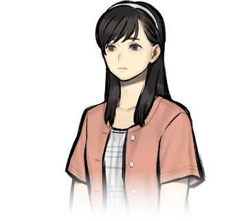
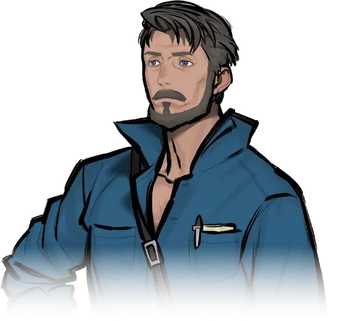
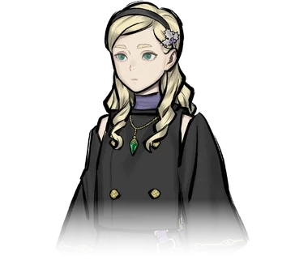
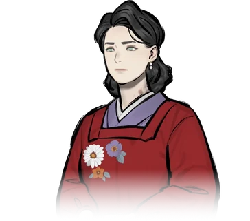
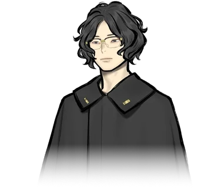
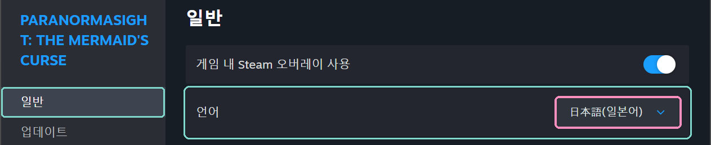

번역에 대한 부탁
일본어 원문을 하나하나 확인하고 자연스러운 한국어로 다듬었지만, 그래도 부족한 부분이 있을 수 있습니다. 너그러운 양해 부탁드립니다.
오역이나 어색한 표현, 더 나은 번역이 떠오르면 언제든 적극적으로 제보해 주세요. 보내 주신 의견은 하나하나 확인하겠습니다.
오역·개선 의견 제보하기텍스트 14,156행 전부 번역·검수 완료
게임 안 텍스트를 하나도 빠짐없이 번역하고, 모두 일본어 원문과 대조해 검수했습니다. 진행에 필요한 그림 속 글자도 한글화와 검수를 마쳤습니다.
소개
『파라노마사이트 FILE38: 이세 인어 이야기』는 스퀘어 에닉스의 미스터리 어드벤처 게임입니다. 198x년 여름, 미에현 이세만에 떠 있는 외딴섬 카메시마를 무대로 인어 전설과 섬을 덮친 저주를 쫓아갑니다.
2026년 2월 19일에 Nintendo Switch, PC(Steam), iOS, Android로 출시되었으며, 정식 한국어는 지원하지 않습니다.
이 패치는 일본어 원문을 기준으로 대사, 선택지, 자료, 메뉴, 인물 소개, 스태프 크레디트를 한국어로 옮깁니다. 게임의 일본어 언어 설정 자리에 한국어가 표시되는 방식입니다.

원작 소개
원작 공식 사이트의 줄거리, 등장인물, 제작 스태프 소개를 한국어로 옮겼습니다. 제목을 누르면 펼쳐집니다.
줄거리
무대는 미에현 이세시마 지방.
불로불사를 가져다준다는 인어의 수수께끼를 둘러싸고
여름 외딴섬에서 펼쳐지는 군상극 전기(傳奇) 미스터리.
등장인물 저마다의 속셈이 얽히고설키며
이윽고 수백 년의 역사를 넘나드는 인어의 저주를 둘러싼
경악할 드라마로 이어져 간다.
등장인물

미나구치 유자
水口 勇佐 · Yuza Minakuchi카메시마에 사는, 성실하면서도 마이페이스인 소년. 은퇴한 할머니의 뒤를 이어 해녀 일을 시작했다. 5년 전 해난 사고로 부모님을 잃었고, 그때 어떤 신비한 일을 겪었다.

쿠모이 아자미
雲居 アザミ · Azami Kumoi미나구치 유자의 소꿉친구이자 단짝. 세상을 떠난 아버지의 어선을 물려받아 어부로 일한다. 남을 잘 챙겨 주변에서 의지하는 타입으로, 고향 사랑만큼은 누구보다 강하다고 자부한다.

시라나미 사토
白浪 里 · Sato Shiranami몇 달 전 카메시마에 흘러들어 온 수수께끼의 소녀. 기억을 잃은 것 같은데…….
아와오 츠카사
沫緒 つかさ · Tsukasa Awao카메시마에서 나고 자란 밝고 활발한 소녀. 지금은 고등학교에 다니려고 본토에서 하숙하고 있다. 미나구치 유자, 쿠모이 아자미와는 소꿉친구. 고향에 내려온 동안 시라나미 사토와 친해졌다.

아르나브 바넘
アルナーヴ・バーナム · Arnav Barnum낭만을 찾아 일본에 온 미국인. 본업은 판타지 작가 겸 오컬트 라이터. 아무래도 이세시마에서 인어를 찾고 있는 모양이다. 애칭은 ‘아비’. 40세. 독신.

키르케 루나라이트
キルケ・ルナーライト · Circe Lunarlight《엑소시스트》 소녀. 영국 명문가 출신으로 일본에 유학 중이다. 일본의 전승과 오컬트에 밝아, 친척인 아비의 부탁으로 가이드를 맡고 있다.

시키 유메코
志貴 結命子 · Yumeko Shiki자칭 도쿄의 주부. 무언가를 조사하고 있는 모양인데…….

키류 소도
霧生 双奴 · Sodo Kiryu시키 유메코의 조수로 일하는 청년. 범상치 않은 분위기를 풍긴다.
제작 스태프
- 디렉터 / 시나리오이시야마 타카나리石山貴也
「스쿨걸 스트라이커즈」, 「파라노마사이트 FILE23 혼조 칠대 불가사의」 등
- 캐릭터 디자인코바야시 겐小林 元
「스쿨걸 스트라이커즈」, 「파라노마사이트 FILE23 혼조 칠대 불가사의」 등
- 사운드 컴포저이와사키 히데노리岩﨑英則
「파이널 판타지 크리스탈 크로니클 크리스탈 베어러」, 「파라노마사이트 FILE23 혼조 칠대 불가사의」 등
출처: 원작 공식 사이트(일본어)의 소개 문구를 한국어로 옮겼습니다. © SQUARE ENIX
적용 화면
이미지를 누르면 크게 보이고, 다시 누르면 돌아갑니다.
지원 환경과 설치
정식 v1.0.0은 Windows용 Steam판을 대상으로 합니다.
지원 환경
- Windows용 Steam판만 지원합니다 (Steam AppID
2701440). - Steam 빌드
22496791을 기준으로 만들었습니다. 게임이 업데이트되면 새 판본을 지원하는 패치가 나올 때까지 기다려 주세요. - Nintendo Switch, iOS, Android판과 Steam 이외의 PC판은 지원하지 않습니다.
- 게임을 정상적으로 구매해 설치한 상태여야 합니다. 배포 파일에는 번역을 적용해 수정한 파일만 들어 있으며, 원본 게임 파일은 포함하지 않습니다.
되돌리기
- Steam 라이브러리에서 게임의 속성 → 설치된 파일 → 게임 파일 무결성 확인을 실행하면 원래 파일로 돌아갑니다.
- Windows 설정의 설치된 앱에서 파라노마사이트 FILE38 한국어 패치 v1.0.0 (SAKURA)를 제거하면 패치 파일을 지우고
.bak을 원래 이름으로 복원합니다. - 수동 패치가 적용된 상태에서 설치했다면 그 상태로 돌아갑니다. 재설치해도 최초 백업을 유지합니다.
설치 방법
게임을 종료하고 Steam 언어를 日本語(일본어)로 설정해 주세요.
- Steam 게임 속성 → 일반 → 언어를 日本語(일본어)로 바꾸고 내려받기가 끝날 때까지 기다립니다.
- PARANORMASIGHT2_KR_v1.0.0_Setup.exe를 실행하고 설치 확인에 동의합니다.
- 기본 경로는
C:\Program Files (x86)\Steam\steamapps\common\PARANORMASIGHT_2입니다. 다른 위치라면 찾아보기로 게임 폴더를 선택합니다. - 설치가 끝나면 완료를 눌러 닫고 게임을 실행합니다.

번역 기준
처음 한 번 플레이하는 사람이 원작의 단서와 인물 관계를 그대로 느낄 수 있도록 옮겼습니다.
영어판은 문맥을 확인하는 참고 자료로만 썼습니다.
한국 게임·애니메이션에서 널리 쓰는 표기를 따릅니다(카메시마, 츠카사, 타이라노 토모시게). 도쿄처럼 굳은 표기와 공식 명칭은 그대로 씁니다.
인물 소개의 나이와 관계에 맞췄습니다. 예를 들어 츠카사는 유자와 아자미를 ‘오빠’라고 부릅니다.
제목·안내·조작·퍼즐 단서처럼 진행에 필요한 글자만 한글화했습니다. 장식·낙관·작은 옛 글씨는 원화 그대로입니다.
‘5년 전’처럼 아라비아 숫자로 씁니다.
업무명과 일본어 이름을 한국어로 옮기고, 아래쪽 영문 이름은 그대로 둡니다.
주요 용어
| 원문 | 한국어 | 비고 |
|---|---|---|
| 亀島 | 카메시마 | 작품의 무대가 되는 섬 |
| 八百比丘尼 | 야오비쿠니 | 공식 명칭을 따름 |
| なめどり | 양아치 새 | 새들의 불량배 무리. 개별 새 이름은 한국어 말장난으로 옮김 |
| 素潜り漁 | 물질 / 잠수 어로 | 대사는 ‘물질’, 미니게임·자료 화면은 ‘잠수 어로’ |
| トモカヅキ | 토모카즈키 | 이세·시마 지역 해녀 전승 |
| 呪主 | 저주인 | 음독 ‘주주’로는 뜻이 전해지지 않아 ‘저주를 지닌 사람’이라는 뜻을 살림 |
자주 묻는 질문
패치를 쓰기 전에 알아 두면 좋은 내용입니다.
어디서 내려받나요?
상단의 한글패치 설치파일 버튼이나 GitHub Releases에서 내려받을 수 있습니다. 정식 v1.0.0 설치 파일을 제공합니다.
패치를 지우고 원래대로 되돌리고 싶어요.
Windows 설정의 설치된 앱에서 이 한국어 패치를 제거하면 .bak을 설치 직전 파일로 복원합니다. 수동 패치 이전의 게임 원본이 필요하면 Steam의 게임 파일 무결성 확인을 이용해 주세요.
Switch나 모바일판에서도 쓸 수 있나요?
아니요. Windows용 Steam판만 지원합니다.
Steam 업데이트 뒤에 일본어로 돌아왔어요.
Steam의 게임 파일 무결성 확인이나 게임 업데이트가 패치한 파일을 원래대로 되돌릴 수 있습니다. 게임이 업데이트되면 새 판본을 지원하는 패치가 나올 때까지 기다려 주세요.
자료 화면의 줄바꿈이 어색한 곳이 있어요.
자료의 문장 흐름과 제보된 그림·출처 배치를 수정했습니다. 최신 수정 화면의 추가 확인과 전체 분기 플레이 검증은 계속 수집합니다. 어색한 줄바꿈이나 진행 문제는 자료 이름·장면과 함께 제보해 주세요.
그림 속 일본어가 일부 남아 있어요.
진행에 필요한 제목·안내·단서만 한글화하고, 그림의 장식이나 작은 옛 글씨는 원화 그대로 두었습니다. 읽어야 진행할 수 있는 글자가 일본어로 남아 있다면 제보해 주세요.
어떤 글꼴을 쓰나요?
패치에 쓰는 글꼴입니다. 글꼴 원본은 수정하지 않았고, 배포 파일의 Font-Licenses.txt에 각 라이선스 원문을 함께 넣었습니다.
| 글꼴 | 쓰는 곳 | 라이선스 |
|---|---|---|
| Noto Sans CJK KR | 대사·메뉴 등 기본 본문 | SIL OFL 1.1 (© Adobe) |
| Noto Serif CJK KR | 자료 화면 글, 자료 그림 속 문구 | SIL OFL 1.1 (© Adobe) |
| Pretendard | 시작 화면 저작권 주의 문구 | SIL OFL 1.1 |
| 마루 부리 (MaruBuri) | 인물 이름, 작은 타이틀 | SIL OFL 1.1 (© NAVER Corp.) |
| 조선100년체 | 큰 타이틀 (이미지로 그림) | 방일영문화재단 무료 글꼴 (수정·판매 금지) |
문제 제보
오역, 어색한 표현, 글자 잘림, 진행 문제를 알려 주세요. 작성한 내용은 GitHub Issues의 새 이슈 화면에 채워져 열립니다.